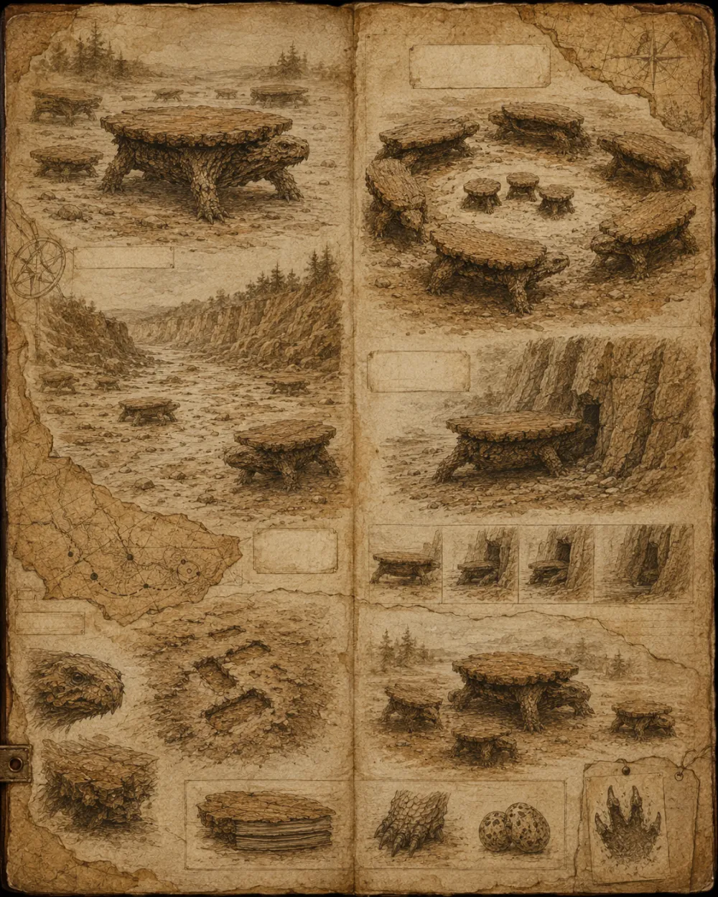

Field journal
Extracts from the notebook kept during the survey of the western Tabulidae territories.

Red-Feet Gorge
At 6:12 a.m., the first trace: four rectangular prints in the damp dust. At 6:40, a low table crossed the dry riverbed. It stopped three times, as if checking that the world remained horizontal.
Clearing of the Cloths
A defensive banquet. Seven adults formed a perfect circle around three stools. No meal was visible, but the air smelled of dried pear and distant storm.
Ruin of the North Shelter
A domesticated individual, probably escaped from a kitchen, joined the colony. The wild ones sniffed it by the feet, then let it sleep near a wall. By morning its varnish shone less. A good sign.
Folding Cliff
The folding tables snapped shut as a shadow passed. For twelve minutes the wall seemed empty. Then the tops opened one by one, like eyelids of wood.